Na het opstarten moet U PairTwo configureren, Ga dus naar ‘Opties’ – submenu ‘Algemene Opties ‘ en toon het programma de weg naar het bestand Player.dbf Dit bestand bevat namelijk alle gegevens van de spelers, aangesloten bij de KBSB. Eventueel moet U ook het pad of directory aantonen waarin Fide.dbf bewaard staat. Dit laatste bestand bevat alle spelers met een FIDE Elo. Sla dan die gegevens op met een klik op OK.
| 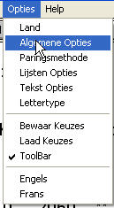 | 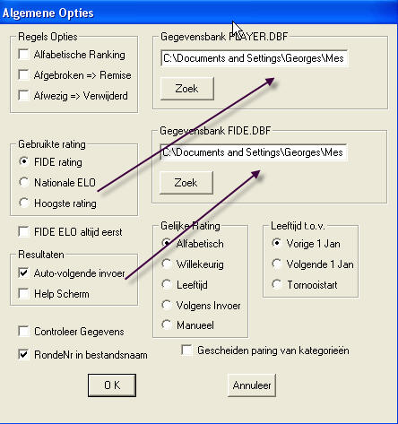 |
| 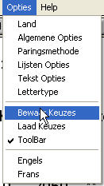 |
Het ZWITSERS Systeem.
U start met de creatie van een nieuw toernooi. Als Type kiest U SWISS en leg dan de eigenschappen van dit toernooi vast.
Vergeet niet de begin – en einddatum in te vullen.
De toernooien SWISS en AMERICAIN kunnen ook opgezet worden met
Heen- en Terugronden.
Bij die keuze zullen de spelers twee maal tegen mekaar opgesteld worden, wel met verwisselde kleuren.
Hiertoe het vakje ‘ H/T’ aankruisen en het correct aantal ronden invullen .
Opgelet : PairTwo VERDUBBELT automatisch dit aantal ronden.
De paringen voor de heenronde worden door het programma op de gewone manier gedaan,
de paringen voor de terugronde zijn de copy van de vorige doch nu met verwisselde kleuren.
Een gevolg is date en speler die Bye is , dit etiket opgeplakt krijgt voor twee achtereenvolgende ronden
en zijn punten ziet stijgen met 2 eenheden.
| 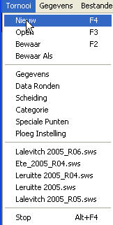 | 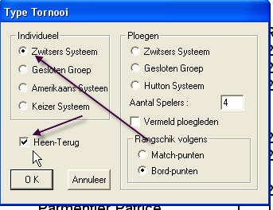 |
 |
|
| Het programma berekent automatisch de data van de volgende ronden, dit op basis van het aantal ronden en het aantal dagen begrepen tussen begin- en einddatum. Eventueel worden ook de vrije dagen vastgelegd. Het is dus nodig in het menu ‘Data van de Ronden ‘, de voorgestelde speeldata te controleren en eventueel te verbeteren. | 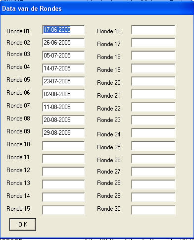 |
| Volgende stap : de scheidingsnormen vastleggen. Plaats de cursor op de eerste norm, in de lijst , verder de tweede normde passende. Op dezelfde wijze legt U de volgende scheidingsnormen vast. | 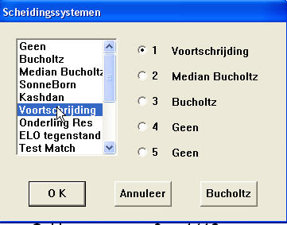 |
Vervolgens kunt U de spelers et toernooi deelnemen invoeren.
Bovenaan bladzijde
Terug naar Presentatie
De Spelers
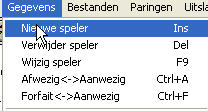 Nu brengen wij de nieuwe spelers in , wij gebruiken hiervoor het menu of , eenvoudiger, met de ‘INS’ toets. Er zijn drie manieren om spelers in te brengen . De eerste is handmatig alle gegevens in te vullen., zonder stamnummer. Dit is natuurlijk aangewezen voor spelers die nog niet aangesloten zijn. Nadat alle velden ingevuld zijn op OK klikken.
| 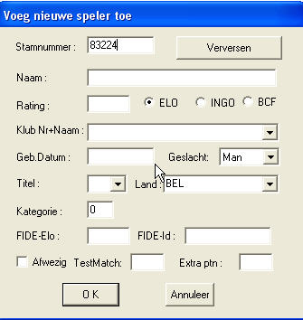 | na 'TAB' 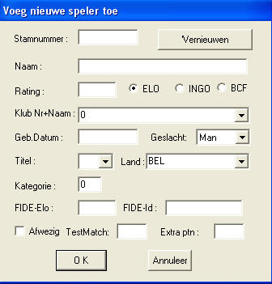 |
De laatste methode is eenvoudiger maar omslachtiger : in het veld ‘Naam ‘tijpt U de naam van de speler , of enkele beginletters zo de juiste schrijfwijze niet gekend is, en sluit af met een asterisk (*). Met de Entertoets brengt U nu een lijst op het scherm waarin alle namen die beginnen met de ingetijpte beginletters. Dubbelklikken op de gepaste naam zorgt voor de invoer van alle gegegevns uit PLAYER.DBF en FIDE.DBF.
| '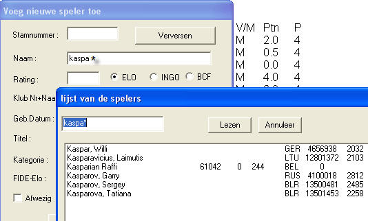 |
De diverse velden | |||||||||||||||||||||||||
|---|---|---|---|---|---|---|---|---|---|---|---|---|---|---|---|---|---|---|---|---|---|---|---|---|---|
| Stamnummer | Het stamnummer KBSB van de speler | ||||||||||||||||||||||||
| Vernieuwen | Indien U opnieuw de gegevens uit PLAYER.DBF en/of FIDE.DBF wil halen | ||||||||||||||||||||||||
| Naam | De naam en de voornaam. | ||||||||||||||||||||||||
| Rating | ELO, of INGO of BCF | ||||||||||||||||||||||||
| Klub Nr+Naam | Het nummer van de club. Dit nummer vind U ook terug in het bestand CLUB.TXT in dezelfde directory waar P2.exe zich bevindt | ||||||||||||||||||||||||
| Geb.Datum | Nogal wiedes | ||||||||||||||||||||||||
| Geslacht | Man/Vrouw | ||||||||||||||||||||||||
| Titel | De officiêle titel van de speler. PairTwo herkent volgende titels:
| ||||||||||||||||||||||||
| Land | Land van afkomst. Info te vinden in 'Country.txt' in dezelfde directory als P2.exe. | ||||||||||||||||||||||||
| Kategorie | De hoedanigheid van de speler, bv. voor het toekennen van een prijzencategorie of de ‘Pool ‘ bij gesloten toernooien | ||||||||||||||||||||||||
| FIDE-Elo | Eventueel de ELO FIDE van een speler | ||||||||||||||||||||||||
| FIDE-Id | Het stamnummer FIDE v.e. speler | ||||||||||||||||||||||||
| Afwezig | Bij de inschrijving aan te kruisen indien de speler afwezig is bij de eerste ronde | ||||||||||||||||||||||||
| TestMatch | Invullen het resultaat van een testmatch. | ||||||||||||||||||||||||
| Extra ptn | Dit veld laat toe om fictieve punten toe te voegen of af te trekken bij deze speler om zo de volgende paring en zijn rangschikking te beïnvloeden. Dit kan bijvoorbeeld dienen om een versnelde paring te krijgen. Of in geval van technisch forfait (overmacht voor beide spelers) en waar men als resultaat ½-½ heeft gebruikt, door hen -0.5 toe te voegen (dus af te houden) om correctere paringen te bekomen. Of als een speler een strafpunt heeft gekregen die op het einde van het toernooi voor de eindrangschikking ingezet wordt (als men het eerder zou doen, dan krijgt die speler ook zwakkere tegenstanders wat misschien zijn straf zou compenseren/opheffen). | ||||||||||||||||||||||||
PairTwo toont nu de lijst van de spelers.
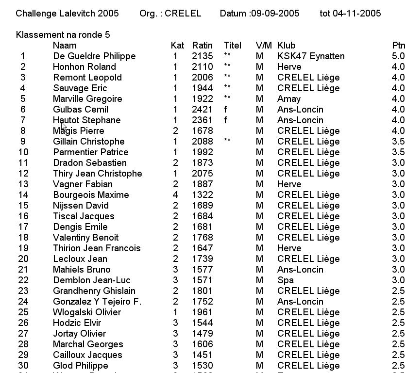
| 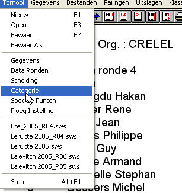 | Wij kunnen nu enkele opties opties van de spelers wijzigen (bv. vasyleggen vd categorie ). |
| 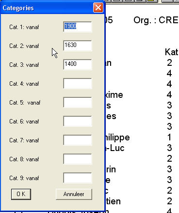 | Vastleggen van de categories. U moet enkel het Elocijfer vanaf hetwelk een categorie toegepast wordt, invoeren. Automatisch zal het programma deze categorie toekennen aan de spelers. Indien U de categorie wijzigt, zal deze wijziging ook toegepast worden op de indeling van de spelers. Men kan steeds een categorie handmatig wijzigen. Maar indien U later de categorieindeling herbegint (zie hiervoor ), wordt deze wijziging ook toegepast opalle spelers. Het toekennnen van een Elo categorie kan gebruikt worden om de ratingprijzen toe te kennen of om ‘Pools ‘ te vormen bij gesloten toernooien. |
| 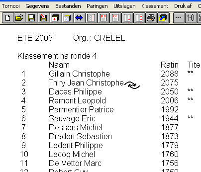 | Bepaalde parameters kunnen gewijzigd worden in de voorkeuren. Aandacht ! U moet nu de spelers geklasseerd volgens Elo uitlijsten . Ga dus in het menu ‘Klassement « en klik « Rank « aan . Indien bepaalde spelers niet conform deze ranking op het scherm verschijnen, kunt U deze Ranking nog steeds wijzigen in het menu « Klassering/Wisselen van nummers |
| 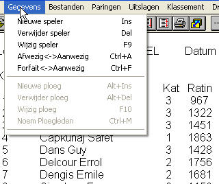 | |
| 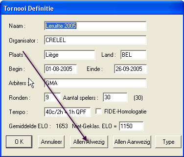 | Vertrekkend van het menu "Gegevens" kunt U een speler ‘Bijvoegen‘ (INS Toets), een speler ‘verwijderen’ (DEL Toets), een speler ‘wijzigen‘ (toets F9 Of ‘dubbelklikken’ op de speler), het status van een speler wijzigen van ‘Aanwezig ‘ naar ‘Afwezig‘ (toets Ctrl A ) of naar Forfait (toets Ctrl F ) en vice versa. Een Toets speler (of forfait ) zal niet gepaard worden voor de volgende ronde. Dus, na die ronde, niet vergeten die afwezige terug op aanwezig te zetten. Indien meerdere spelers afwezig gemeld worden, kunt u deze later in één ruk opnieuw aanwezig melden door in het menu ‘Toernooi Definieties‘ op de knop ‘Allen aanwezig‘ te klikken. De spelers die ‘Forfait‘ gesteld werden, kunnen niet meer naar ‘actief‘ muteren. Deze functie is zeer interessant voor de Amerikaanse toernooien. In deze formule worden enkel de spelers de Aanwezige spelers gepaard. U kunt dus alle spelers ‘Afwezig' aanduiden en dan enkel voor de ‘Aanwezige‘ opnieuw de knop omdraaien. (toets Ctrl A) |
Bovenaan bladzijde
Terug naar Presentatie
Het Scheidingssysteem
| 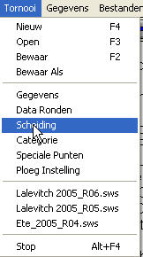 | Bij gelijkheid van punten, moet u toch de spelers kunnen scheiden.
Onder ‘Toernooi ‘ op ‘Scheiding ‘ klikken, uit de voorgestelde systemen kiest u nu – in volgorde van belangrijkheid – de diverse systemen. (max. 5 normen ) |
|
| 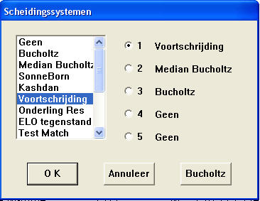 | Diverse Mogelijkheden :.
|
|
Terug naar Presentatie
Het Gesloten Toernooi
| 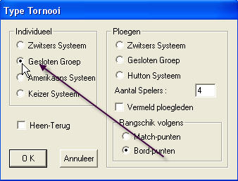 | Om een Gesloten toernooi te creëren dient U enkel het bijhorende vakje aan te kruisen (zie afbeelding ) en vooral het juist aantal ronden in te vullen. Nadien controleert U de data ( zoals in het Zwitsers systeem ), U legt verder het Scheidingssysteem vast ( normaal SB ) en nadien komen de spelers aan de beurt. U kunt twee methoden gebruiken :bij de eerste wordt telkens een afzonderlijk gesloten toernooi aangelegd per serie van x spelers. Bij elke zgn. Pool wordt dus een nieuw bestand aangelegd. Dit is wel de oude methode doch ook de gemakkelijkste. |
| 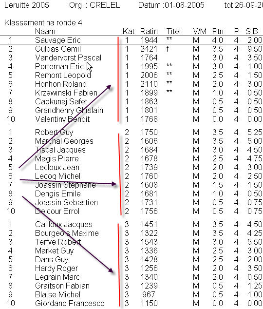 | Een tweede methode (die momenteel nog moet bijgeschaafd worden )
bestaat erin alle spelers in één toernooi in te schrijven.
U moet er wel over waken dat het aantal spelers gelijk is aan een veelvoud van (het aantal ronden + 1 ).
Nadien moet u via ‘Categorie ‘ de spelersgroepen aanduiden (elke groep telt natuurlijk evenveel spelers .).
Indien 9 ronden gespeeld worden omvat elke groep10 spelers .
U moet in dit geval de categorie ‘1’ aanduiden voor de eerste 10 spelers, cat. 2 voor de volgende 10 , enz. .
Nu moet U nog in het menu ‘Opties ‘ – rubriek ‘Algemene Opties‘ aanklikken om in het scherm
de keuze ‘Gescheiden Paring van Categorien‘ aan te klikken.
|
| 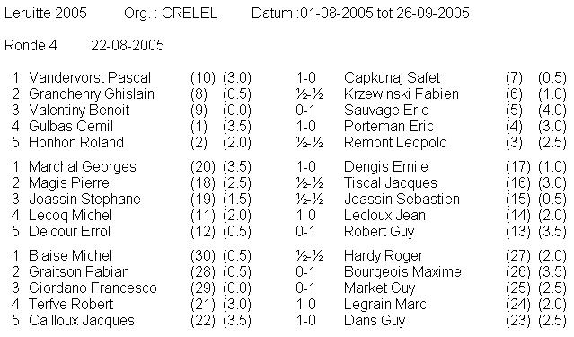 | Indien U nu de paringen doet, worden de spelers elk in hun toegewezen Kategorie gepaard en de Pools worden gescheiden door een blanco tussenlijn |
| 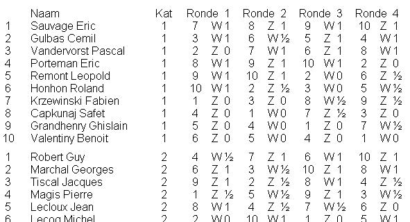 | U kunt een normaal klassement op punten bekomen (cfr. Afbeelding hiernaast ) , of een klassement in tabel vorm. U kiest dit in het Menu ‘Klassement ‘ . 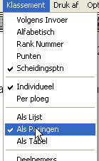 |
| 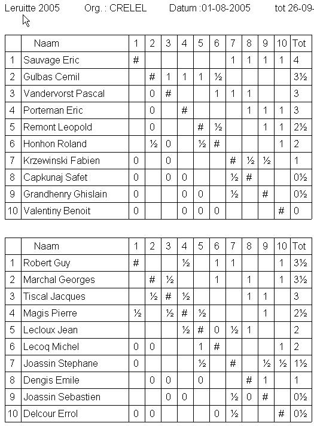 | 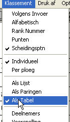….of nog in een andere vorm (cfr. Hiernaast ) voor elk van de ’Pools‘. |

Bovenaan bladzijde
Terug naar Presentatie
Het Amerikaans Systeem
| 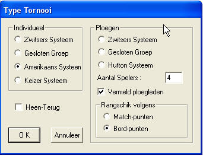 | Aandacht : in het kader van de gegevens van het toernooi , bij het aantal ronden rekening houden dat, bij Heen/Terug , het programma zelf het ingevoerd aantal ronden zal verdubbelen. Ook nu weer worden de onpare paringen normaal opgesteld en de paringen zullen een copie zijn van de vorige, doch nu met verwisselde kleuren. Zo zal een speler die Bye is tweemaal een punt toegekend worden daar hij/zij twee ronden na mekaar zal Bye zijn. In het Amerikaans systeem kunt U specifieëren of het toernooi zal gespeeld worden rekening houdend met aanwezigheidspunten of niet. |
| 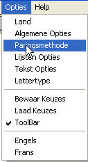 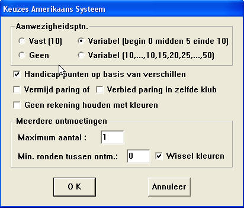 |
Die aanwezigheidspunten worden bij elke ronde toegekend aan de aanwezige spelers, of deze speler zal gepaard worden of niet.
U kunt kiezen tussen :
|
Bovenaan bladzijde
Terug naar Presentatie
De Opties
| 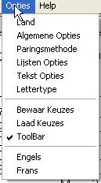 |
U hebt hier de mogelijkheid alle Opties voor het toernooi vast te leggen : taal (nederlands, frans of engels ).
U kunt kiezen om de ‘Toolbar’ op het scherm te brengen of niet.U kunt hier ook de gekozen Opties bewaren of vroegere binnenhalen.
 Onder ‘Land‘ kiest U tussen Belgie en Nederland, dit omdat de twee landen een ander formaat van verslagen vragen.
Deze optie komt dus goed onze internationale arbiters, die in beide landen optreden, van pas
Onder ‘Land‘ kiest U tussen Belgie en Nederland, dit omdat de twee landen een ander formaat van verslagen vragen.
Deze optie komt dus goed onze internationale arbiters, die in beide landen optreden, van pas |
| 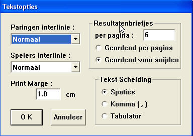 | TekstverslagenDeze optie laat toe de uitdruk van bv. spelerslijsten of klassementen het gewenste formaat te geven. : met de voorgestelde enkele lijn, met 1 ½ of 2 lijnen spatie.. U kunt hier ook het aantal resultaat- formulieren te drukken per blad vastleggen, of de bladschikking vorm gevenTekst scheiding : Indien u later de lijsten wil bewerken met een tekstverwerker, of U deze wil direct uitdrukken, dan raden wij U de optie Spaties aan . Indien U echter de steekkaarten wil bewerken met een spreadsheet programma (Excell…) , kies dan als scheidng de Komma ( U bekomt het formaat . csv ) of nog Tabulator |
| 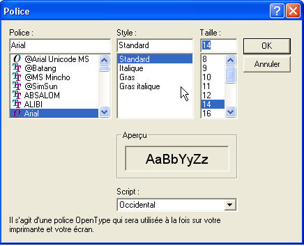 | TekstkaraktersLaat U toe het soort en het formaat van de karakters te kiezen. Een beetje experimenteren helpt. |
| 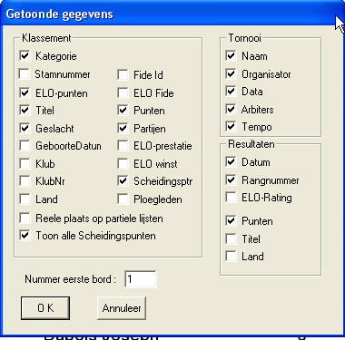 | Opties KlassementTwee manieren om dit menu te bekomen :
Steeds liggen allerlei gegevens op het bord die U slechts moet aanklikken om op uw lijst ook uitgedrukt te worden. |
| 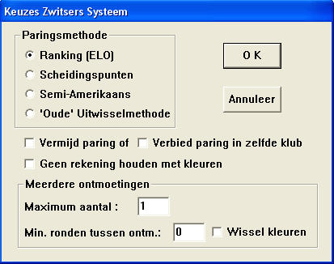 | Keuzes Zwitsers SysteemIn princiepe is de voorgestelde keuze de goede. U mag niet vergeten eventueel ‘Wissel Kleuren ‘ aan te klikken |
 |
VoorkeurenGegevensbank Player.DBF: bij het eerste gebruik van het programma hier vastleggen waar het genoemd bestand zich bevindt. Gegevensbank FIDE.DBF: id als hierboven.. Regels opties :niet aankomen. Gebruikte Rating : de gebruikte Elo : nationale of Fide . Indien ‘hoogste ‘ werd aangeklikt, zal bij het uitdrukken een ‘N’gedrukt worden voor de nationale rating, een ‘F’ voor een Fide rating Leeftijd t.o .v.: practisch uitsluitend in jeugdtoernooien van toepassing Gelijke Rating: bij gelijke punten, wordt volgens de aangeduide keuze uitgedrukt. RondeNr in bestandsnaam : zeer aangeraden voor het bewaren – en later terugvinden – van de uitslagen per ronde. Gescheiden Paring van Kategorien: vooral van toepassing voor de gesloten toernooien of waar de leeftijd kategorien van tel zijn. |
Bovenaan bladzijde
Terug naar Presentatie
De Paringen
De paringen ,die conform zijn aan de richtlijnen van de FIDE , dateren van 1992. Deze regels worden beschreven in het ‘Handbook‘ van deze instelling, in ‘C. General Rules and Recommandations for Tournaments‘ hoofdstuk 4.1 Swiss System Based on Rating.| 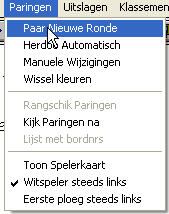 | De paringen gebeuren via het menu Paringen Daar kunt U :
|
| 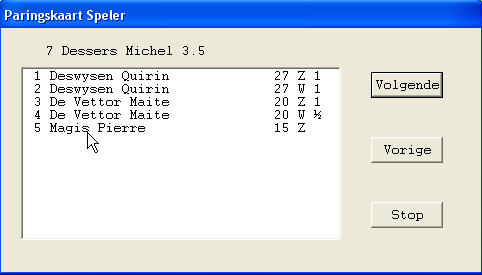 | De steekkaart van een speler kan geraadpleegd worden door te klikken met de linker muisknop . Met ‘Volgende‘ en ‘Vorige‘ brengt U de ene na de andere spelerskaart op het scherm.. |
Bovenaan bladzijde
Terug naar Presentatie
De Uitslagen
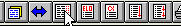Eens de ronde beëindigd dienen de uitslagen ingebracht. Dus op knop , 3° van links (zie figuur). Drie manieren staan ter beschikking :| 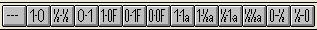 | 1. Via de resultaatbalk die achtereenvolgens voorstelt :uitslag verwijderen, dan 3 normale uitslagen, 3 uitslagen na forfait , 3 uitslagen na verdaging en 2 speciale resultaten (GSM of onvoldoende materiaal). |
| 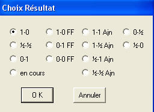 | 2. Dubbelklik op de lijn van tegenspelers en kies de juiste uitslag. |
|
3. Gebruik de cijfertoetsen (deze van de bovenste rij van het klavier) |
Bovenaan bladzijde
Terug naar Presentatie
De Bestanden
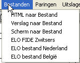 In dit menu kunt U diverse bestanden aanmaken :- Bestand naar Html : maakt bestanden van het formaat Html om bv. te publiceren op een Website..
- Verslag naar Bestand : brengt het algemeen klassement en de uitslagen van de ronden naar een bestand. Zet vooraf als optie Tekst enScheiding tekst = Spatiele.
- Scherm naar Bestand : : voert het huidig scherm naar een bestand.
- Elo FIDE Zwitsers : : maakt een bestand aan bestemd voor de Eloberekening FIDE
- Elo bestand Nederland : bestand voor de Eloverwerking NL
- Elo bestand Belgie : bestand voor de Eloverwerking Belgie
Bovenaan bladzijde
Terug naar Presentatie
De Drukmogelijkheden
| 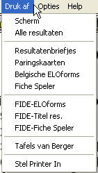 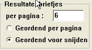 |
Scherm | drukt het huidig scherm. |
| Alle Resultaten | alle uitslagen van alle ronden. | |
| Resultatenbriefjes | drukt de briefjes voor het noteren van de resultaten van de huidige ronde. Er staat op vermeld : het Nr. van de ronde, het Nr. van de speeltafel, de naam van beide spelers, een vrije lijn om het resultaat in te schrijven,een vrije lijn voor de handtekeningen, en een lijn om een eventuele afwezigheid te noteren.Het aantal van de uit te drukken formulieren kan vooraf gewijzigd worden in de optie Tekst. Verder kunnen deze steekkaarten ook uitgedrukt worden in de volgorde van de speeltafels. Hiertoe dient geschikt per blz. aangekruist te staan | |
| Paringskaarten | de paringen voor alle partijen. | |
| Belgishe ELOforms | drukt een tabel uit waarop in volgorde : de nummers van de spelers tegen wie gewonnen werd, tegen wie remise gespeeld en tegen wie verloren werd.Deze lijst wordt geschift op punten. | |
| Fiche Speler | drukt de paringskaart uit per speler. | |
| ELO forms FIDE | ||
| Résultat Titre FIDE | ||
| Carte FIDE Joueur | dit trio is zonder betekenis | |
| Tafel van Berger | Druk de tafel van Berger met de data van de ronden. | |
| Options Imprimante | onze oude vertrouwde Windows box |
Bovenaan bladzijde
Terug naar Presentatie
De Hot-Keys
| F1 | Hulp |
| Ctrl-S | Bewaar |
| Ctrl-O | Open |
| Ctrl-N | Nieuw |
| Alt-F4 | Stop |
| F5 | Vorige ronde |
| F6 | Volgende ronde |
| F7 | Huidige ronde |
| F9 | Wijzig speler |
| F10 | Wijzig ploeg |
| Ins | Nieuwe speler |
| Alt-Ins | Nieuwe ploeg |
| Del | Verwijder speler |
| Alt-Del | Verwijder ploeg |
| Ctrl-A | Afwezib <--> Aanwezig |
| Ctrl-F | Forfait <--> Aanwezig |
| Ctrl-Shft-A | Allen afwezig |
| Ctrl-Shft-P | Allen aanwezig |
| Ctrl-M | team members ?? |
Bovenaan bladzijde
Terug naar Presentatie